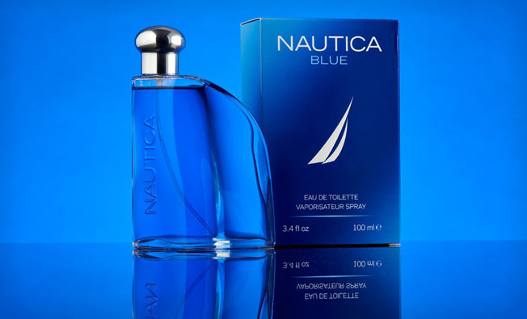

This Summer Perfume Will Last Long And Doesn’t Cost You A Bomb
Buying a perfume can cost a bomb and when you are on a budget, you look for cheaper and not-so-branded options. Also, it is a tedious job because of the work involved in smelling each and every scent and zeroing on one. And men, as you know it, are too lazy to do such things. Although, buying and selecting a perfume can be a difficult task, we all have to do it because no one wants to smell bad.
While some people are brand conscious and only buy the brands they have been using for ages, there are others who are still not aware of the scents and brands to go for. Understanding the need, we came out with Perfume Of The Week stories through which we let you know of a fragrance which is highly recommended all over the world.
Nautica, a not-so-big name in the perfume business, has an amazing collection of mid-priced grooming products for men. Nautica Blue is one such amazing product from the collection and it’s literally made for Indian summers. This one is an Aromatic Aquatic fragrance, which basically is an all-in-all beach fresh fragrance best for summers.
With top notes of pineapple, peach and bergamot, Nautica Blue is a mild but long-lasting fragrance. This is not for someone who likes strong scents but for people who like moderate fragrances that stay for longer durations.